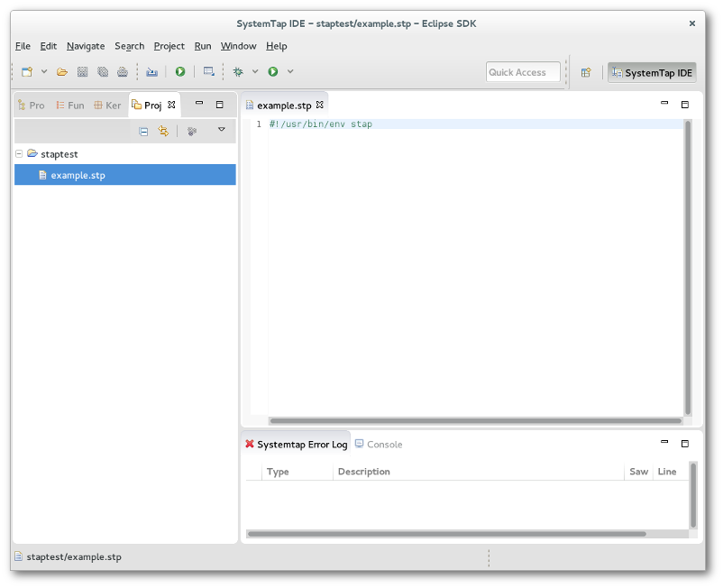
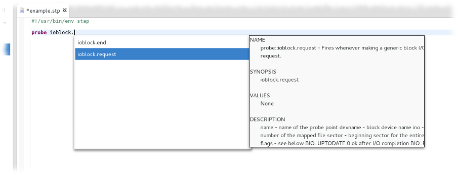
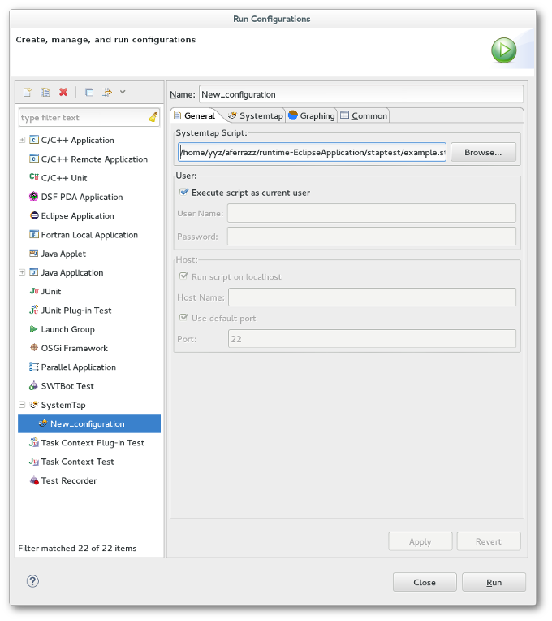
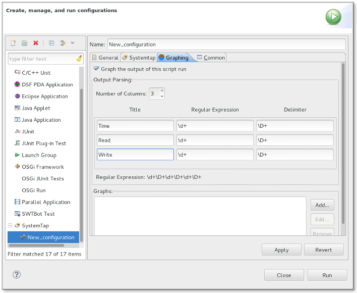
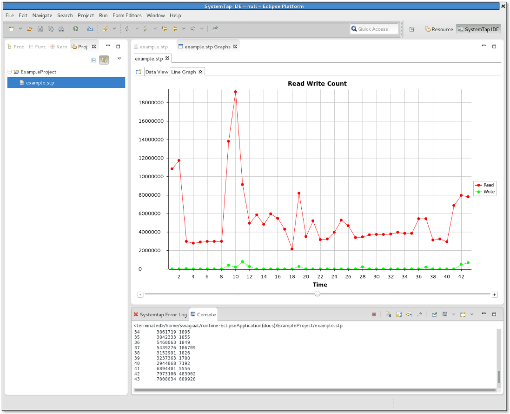
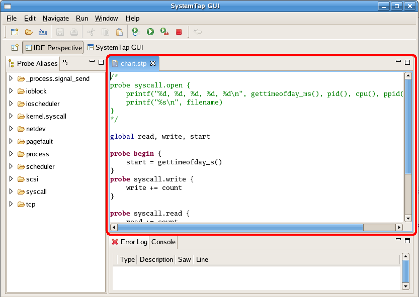
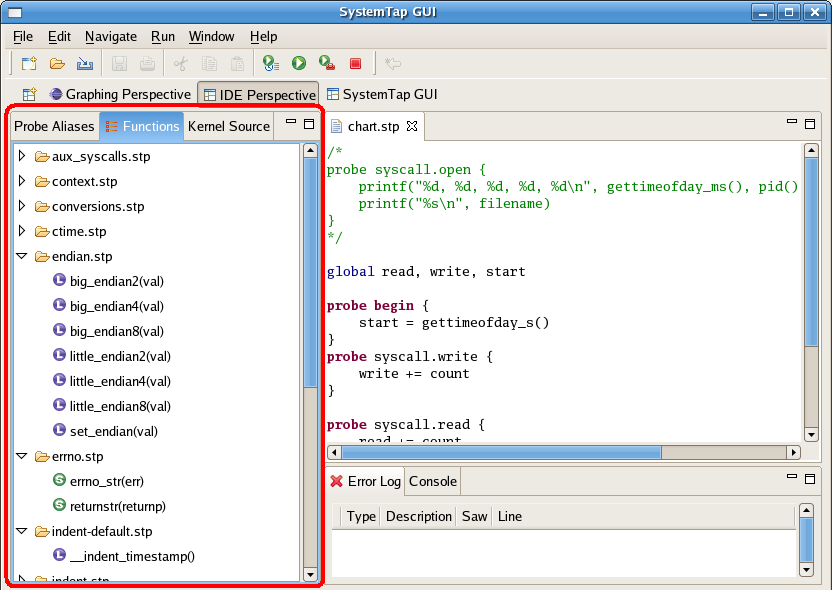
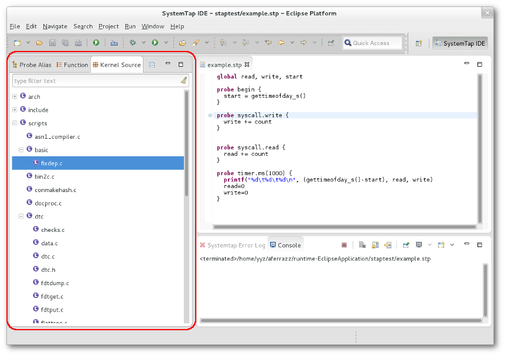
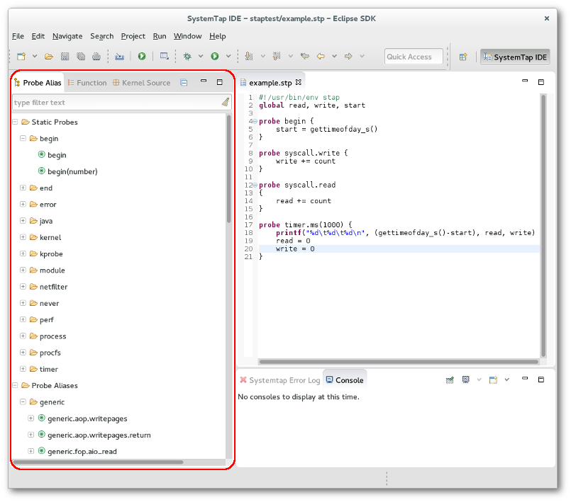
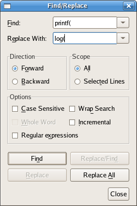

| SystemTap IDE | ||
|---|---|---|
|
|
|
|
| SystemTap User Guide | SystemTap Graphing | |
In this tutorial we will orient you with IDE Perspective and its functions. At this point we assume that you are able to run Systemtap plug-in and are unfamiliar with how to procede. If you cannot yet start the application, please refer to our Installation help page NOTE: If this is the first time opening the IDE Perspective it will take a while to load as it has to parse the tapsets.
The IDE Perspective's purpose is to allow the user to create, view, and edit Systemtap scripts. There are other editors built in (plain text and the C editor), however, they ultimately exist to facilitate the writing of Systemtap scripts.
In this lesson we will open a new Systemtap script file to familiarize ourselves with the IDE Perspective. If you don't already have a project you plan to put your new script in start by creating a new one. Select the File menu -> New -> Project -> General -> Project. Follow the wizard to create a new project.
Now you are ready to create the script. Select File -> New -> Other -> Systemtap -> Systemtap Script. Follow the wizard to provide your script name and the project which will contain it (Use the project we created above).
This should open up a new editor with a small stub of a script.
At this point proceed to Lesson 2: Writing Your First Script if you wish to learn how to write your own script file or Lesson 3: Running Your Script if you wish to run this one.
In this tutorial we will guide you through the process of writing your first Systemtap script. It is strongly recommended that you review the Systemtap website's tutorial - http://sourceware.org/systemtap/tutorial for up-to-date information on the latest version of Systemtap.
In the previous lesson we created a new script and opened it in the editor.

Now try writing a new script or type/copy the following example:
global read, write, start
probe begin {
start = gettimeofday_s()
}
probe syscall.write {
write += count
}
probe timer.ms(1000) {
printf("%d\t%d\t%d\n", (gettimeofday_s()-start), read, write)
read=0
write=0
}
Now to demonstrate the functionality of the Probe Alias browser we will have you complete the read probe yourself. Start by opening the syscall folder in the Probe Alias browser. If you do not have any content in the browser you are experiencing a problem with Systemtap installation and should refer to our Installation help page. Ensure your cursor is located at the end of the file. Now scroll down and double click the read probe alias. Systemtap GUI will insert the skeleton probe at the point at which your cursor is at, and should look similar to the following:
probe syscall.read
{
/*
* available variables on this probe:
* argstr, buf_uaddr, count, fd, name
*/
}
Now insert the following line into the syscall.read probe:
read += count
You may remove the comment (/* ... */) if you wish This will count the number of bytes read and written each second and print it out. The begin probe executes first, by getting the time of day. The read and write probes increment each time the function is called. The timer probe prints the information every second. If you typed the script in manually you may have noticed that the editor provides code completion for probe alias. If you did not, type "syscall.". You'll see a box come up that you may use to select an item to complete your probe alias.
Another way to get assistance while writing a new probe is to press CTRL+Space at any point during editing. Doing so will provide autocompletion for partially spelled probe names, what variables and functions are available inside a probe and documentation where available.

In Lesson 3 you will learn how to run Systemtap scripts in the IDE Perspective.
In this lesson we will cover running your script. You may use either the script you wrote in Lesson two or write a new one.
There are two ways to run a script. If you click on the run button in the tool bar that will run the current script as the current user on the local machine. For more control over running options you can create a Launch Configuration. To do so right click on the script editor or the script file in the Project Explorer then select Run As -> Run Configurations.... Once the dialogue pops up double click on the SystemTap tree item and you should be presented with the following dialogue:

Here you can enter remote host information, run as a different user, as well as various other options for running systemtap. Explore the various tabs and options. The tooltips should provide help in understanding what the various options do. When you are ready click Run to run your script.
Now we will demonstrate running Systemtap scripts with graphs. In order to run the chart example you'll need to use the code provided in Lesson 2: Writing Your First Script :
global read, write, start
probe begin {
start = gettimeofday_s()
}
probe syscall.write {
write += count
}
probe syscall.read {
read += count
}
probe timer.ms(1000) {
printf("%d\t%d\t%d\n", (gettimeofday_s()-start), read, write)
read=0
write=0
}
To do this select Run As -> Run Configurations... create a new SystemTap Launch Configuration as you did previously and switch to the graphing tab.

Select Graph the output of this script run and enter the parsing information below. That is the the number of columns for the chart, their titles and regular expressions. The regular expressions are used to parse the console output for the script and determine the values of each column at a certain sample point. The combined regular expression is shown at the bottom of the dialogue box.
For this example enter the following:
Columns: 3 TITLE REGULAR EXPRESSION DELIMITER Time \d+ \D+ Read \d+ \D+ Write \d+ \D+
The title fields simply display the associated string in the column's header.
Now to add a graph using the parsed output click the Add... button in the Graphs section. Select line graph and click Next. You will be prompted to select a column of the X series and Y series; select "Time" "Read" and "Write" respectively. When the script is executed the Graph Selector view is opened and it will contain a Data View and the graphs you have created. The Data View chart is populated with live data, in addition to the output in the console. You should see a screen similar to the following:

Note that the multiple series graphs (Multi-Line, Multi-Bar, and Multi-Scatter) will request two Y series, Y1 and Y2. In the case of our example, these would be "Read" and "Write". Each series will be assigned a different color value for the purposes of differentiation and will be plotted both in respect to the specified X series.
If you click on Data View you will see that the data table poplulates from live data parsed from the console:

Those are the basics behind running a script in Systemtap GUI.
 IDE Perspective - This is the primary perspective for SystemTap script writers. It contains the
Function Browser ,
Kernel Browser ,
Probe Alias Browser , and
Views and Editors . The IDE Perspective contains the features necessary execute SystemTap scripts and the syntax highlighting and code completion features that facilitate efficient development of scripts.
IDE Perspective - This is the primary perspective for SystemTap script writers. It contains the
Function Browser ,
Kernel Browser ,
Probe Alias Browser , and
Views and Editors . The IDE Perspective contains the features necessary execute SystemTap scripts and the syntax highlighting and code completion features that facilitate efficient development of scripts.
This editor is the most commonly used; it is used for the authoring and editing of Systemtap scripts. It is invoked when the user starts a new file or opens a file with the .stp extension. It provides syntax highlighting, code completion, and run support.

See also: Menus , Example SystemTap Scripts , Toolbars
The Funtion Browser lists all of the functions that are defined in the tapset library. Functions are grouped by the file that they are defined. Each listed function has an icon that corresponds to its return type.
If you double click on any function a call to that function will be added to the active editor at the current cursor location. Also if you right click on a function and click "View Definition" the tapset file where the function is defined will be opened.

The default behavior of this view is to look for functions in the tapset library in the local machine. To look for functions in the same machine used to run the SystemTap scripts, go to Window->Preferences, select SystemTap->SystemTap IDE and check the Use remote connection to load SystemTap probes and functions option. Don't forget to configure the remote server used by remote execution in SystemTap->Remote Server.
The Kernel Source Browser is used to display the kernel tree. This provides you with a quick way to locate places to add probes. Any file in the Kernel Source tree can be opened by double clicking on it. This will open up the selected file in the Editor view. You can then double click on the ruler next to any line that you wish to probe. If SystemTap can probe that line a probe point will be inserted at the end of the script you were most recently working on. If the line can't be probed, an error message will be displayed.

To use this feature it is necessary to configure the Kernel Source Location.
The Probe Alias Browser lists all of the probe aliases that are defined in the tapset library. Probes are grouped based on their type. In addition to the list of probes, each probe lists all of the variables that it has access to. Each variable is listed with an icon that represents its type. Types are as follows:
If you double click on any probe alias, probe point will be added to the end of the active editor. Also if you right click on a probe and click "View Definition" the tapset file where the probe is defined will be opened.

The default behavior of this view is to look for probes in the local machine. To look for probes in the same machine used to run the SystemTap scripts, go to Window->Preferences, select SystemTap->SystemTap IDE and check the Use remote connection to load SystemTap probes and functions option. Don't forget to configure the remote server used by remote execution in SystemTap->Remote Server.
Create a SystemTap script by selecting Select File -> New -> Other -> Systemtap -> Systemtap Script in the IDE Perspective. You'll be prompted to enter a name for the file; make sure that you use a .stp extension or else SystemTap GUI will not recognize the file as a SystemTap script and certain editor and run features will not be active.
Your new file will be open and ready for coding in the Editor pane.
A IDE Tutorial is also provided in the help pages for a step by step demo.
For advanced SystemTap langauge help please see the SystemTap Development User's Guide and the documentation available at the SystemTap website's documentation page - http://sourceware.org/systemtap/documentation.html
The STP Editor is used for the authoring and editing of Systemtap scripts. It is invoked when the user starts a new file or opens a file with the .stp extension. Using the editor is as easy as setting the focus to the editor pane and typing.
There are certain features within the editor you may want to take advantage of:
See also: Menus , Toolbars , Example SystemTap Scripts
Viewing data charts from a SystemTap script is accomplished by running that script with the Graph the output of this script run option. This is covered in the Lesson 3: Running Your Script . After running a script with the graphing option, the user is presented with the Graph Selector View and the Data Table is loaded by default. The data table immediately begins populating as it receives input back through the console from the running SystemTap script.
This section details the views and editor in relation to the IDE Perspective.
The IDE Perspective consists of 5 views and and two editors.
Three editors are available in Systemtap GUI.
What follows is a comprehension list of the menu options available within the IDE Perspective of Systemtap GUI.
(Shortcut: Crtl+F) 


SystemTap GUI currently has two toolbars built in; an Action Bar for file and execution operations and a Perspective Selector to jump to different perspectives.
 New File - This button will bring up a dialog to create a new file. When you click ok the file will be opened in the editor window.
New File - This button will bring up a dialog to create a new file. When you click ok the file will be opened in the editor window.
 Run Script - This will compile the open script and start running it. All output will be sent to the console. If there is an error in the script the error will be reported in the ErrorLog.
IDE Perspective - This button brings you into the IDE Perspective, useful for writing and executing scripts.
Run Script - This will compile the open script and start running it. All output will be sent to the console. If there is an error in the script the error will be reported in the ErrorLog.
IDE Perspective - This button brings you into the IDE Perspective, useful for writing and executing scripts.
This section details each of the options listed under Window->Preferences. The Preferences dialog is the dialog used to set user preferences. The Preferences dialog pages can be searched using the filter function. To filter by matching the page title, simply type the name of the page you are seeking and the available pages will be presented below. The filter also searches on keywords such as appearance and java.
This section details frequently asked questions relating to the IDE Perspective.
Where can I find information regarding the Systemtap scripting language?
A: The best place to look for up to date information regarding Systemtap itself is its homepage - http://sourceware.org/systemtap/documentation.html
How do I run a script once I've written it?
A: There are different options as far as running your Systemtap script. Please visit the Menus to learn more about the four ways of running Systemtap scripts.
Why does the application seem to hang when switching to the IDE Perspective?
A: If this is the first time you are trying to open the IDE perspective, or have recently gotten a new version of SystemTap this is expected. In order to generate a full list of all of the available probes, and functions the GUI has to run the stap command. If there are tapsets that do not run correctly using the 'stap -up2' comamnd this takes a long time. In order to build as complete a list as possible it will use a binary filtering algorithm to figure out which tapset function is broken and generate data for all of the others.
What follows is a few SystemTap Scripts that you may use in SystemTap GUI, taken from and linked to http://sourceware.org/systemtap/documentation.html
There is also a description of the examples - http://sourceware.org/systemtap/examples/demo_script.txt
#!/usr/bin/env stap
#
# This script continuously lists the top 20 systemcalls on the system
#
global syscalls
function print_top () {
cnt=0
log ("SYSCALL\t\t\t\tCOUNT")
foreach ([name] in syscalls-) {
printf("%-20s\t\t%5d\n",name, syscalls[name])
if (cnt++ = 20)
break
}
printf("--------------------------------------\n")
delete syscalls
}
probe kernel.function("sys_*") {
syscalls[probefunc()]++
}
# print top syscalls every 5 seconds
probe timer.ms(5000) {
print_top ()
#!/usr/bin/env stap
# This is an example of profiling a specific command or pid.
# It works by recording the time when a system call is entered
# exited.
# Usage: prof.stp -c "top -n5"
# Will start up "top" and after 5 iterations, will exit.
#
# Usage: prof.stp -x 3323
# Will profile pid 3323 until it ^c is hit.
#
probe kernel.function("sys_*") {
if (target() = tid())
calltime[tid()] = gettimeofday_us()
}
probe kernel.function("sys_*").return {
if (target() != tid()) next
now = gettimeofday_us()
c = calltime[tid()]
if (!c) next
ttime[probefunc()] <<< now - c
delete calltime[tid()]
}
probe end {
printf("\n")
foreach (x in ttime)
printf("%-20s\tcalls:%6d\tavg time (ms):%5d\ttotal(ms):%7d\n",
x, @count(ttime[x]), @avg(ttime[x]), @sum(ttime[x]))
}
global calltime, ttime
#! /usr/bin/env stap
# This is not useful, but it demonstrates that
# Systemtap can modify variables in a running kernel.
# Usage: ./keyhack.stp -g
probe kernel.function("kbd_event") {
# Changes 'm' to 'b' .
if ($event_code = 50) $event_code = 48
}
probe end {
printf("\nDONE\n")
}
#! /usr/bin/env stap
# Using statistics to examine kernel memory allocations
global kmalloc
probe kernel.function("__kmalloc") {
kmalloc <<< $size
}
# Exit after 10 seconds
probe timer.ms(10000) { exit () }
probe end {
printf("Count: %d allocations\n", @count(kmalloc))
printf("Sum: %d Kbytes\n", @sum(kmalloc)/1000)
printf("Average: %d bytes\n", @avg(kmalloc))
printf("Min: %d bytes\n", @min(kmalloc))
printf("Max: %d bytes\n", @max(kmalloc))
print("\nAllocations by size in bytes\n")
print(@hist_log(kmalloc))
}
#! /usr/bin/env stap
# Using statistics and maps to examine kernel memory allocations
global kmalloc
probe kernel.function("__kmalloc") {
kmalloc[execname()] <<< $size
}
# Exit after 10 seconds
probe timer.ms(10000) { exit () }
probe end {
foreach ([name] in kmalloc) {
printf("Allocations for %s\n", name)
printf("Count: %d allocations\n", @count(kmalloc[name]))
printf("Sum: %d Kbytes\n", @sum(kmalloc[name])/1000)
printf("Average: %d bytes\n", @avg(kmalloc[name]))
printf("Min: %d bytes\n", @min(kmalloc[name]))
printf("Max: %d bytes\n", @max(kmalloc[name]))
print("\nAllocations by size in bytes\n")
print(@hist_log(kmalloc[name]))
printf("-------------------------------------------------------\n\n");
}
}
Regular expressions are used in SystemTap GUI to define how the GUI interprets information that it recieves from the script file. If the user wishes to change the regular expression during runtime they may do so by selecting Edit->Modify Parsing Expression.
Basic regex (taken from " http://java.sun.com/j2se/1.5.0/docs/api/ ) -
Summary of regular-expression constructs
Construct Matches
Characters
x The character x
\\ The backslash character
\0n The character with octal value 0n (0 <= n <= 7)
\0nn The character with octal value 0nn (0 <= n <= 7)
\0mnn The character with octal value 0mnn (0 <= m <= 3, 0 <= n <= 7)
\xhh The character with hexadecimal value 0xhh
\uhhhh The character with hexadecimal value 0xhhhh
\t The tab character ('\u0009')
\n The newline (line feed) character ('\u000A')
\r The carriage-return character ('\u000D')
\f The form-feed character ('\u000C')
\a The alert (bell) character ('\u0007')
\e The escape character ('\u001B')
\cx The control character corresponding to x
Character classes
[abc] a, b, or c (simple class)
[^abc] Any character except a, b, or c (negation)
[a-zA-Z] a through z or A through Z, inclusive (range)
[a-d[m-p]] a through d, or m through p: [a-dm-p] (union)
[a-z&&[def]] d, e, or f (intersection)
[a-z&&[^bc]] a through z, except for b and c: [ad-z] (subtraction)
[a-z&&[^m-p]] a through z, and not m through p: [a-lq-z](subtraction)
Predefined character classes
. Any character (may or may not match line terminators)
\d A digit: [0-9]
\D A non-digit: [^0-9]
\s A whitespace character: [ \t\n\x0B\f\r]
\S A non-whitespace character: [^\s]
\w A word character: [a-zA-Z_0-9]
\W A non-word character: [^\w]
POSIX character classes (US-ASCII only)
\p{Lower} A lower-case alphabetic character: [a-z]
\p{Upper} An upper-case alphabetic character:[A-Z]
\p{ASCII} All ASCII:[\x00-\x7F]
\p{Alpha} An alphabetic character:[\p{Lower}\p{Upper}]
\p{Digit} A decimal digit: [0-9]
\p{Alnum} An alphanumeric character:[\p{Alpha}\p{Digit}]
\p{Punct} Punctuation: One of !"#$%&'()*+,-./:;<=>?@[\]^_`{|}~
\p{Graph} A visible character: [\p{Alnum}\p{Punct}]
\p{Print} A printable character: [\p{Graph}\x20]
\p{Blank} A space or a tab: [ \t]
\p{Cntrl} A control character: [\x00-\x1F\x7F]
\p{XDigit} A hexadecimal digit: [0-9a-fA-F]
\p{Space} A whitespace character: [ \t\n\x0B\f\r]
java.lang.Character classes (simple java character type)
\p{javaLowerCase} Equivalent to java.lang.Character.isLowerCase()
\p{javaUpperCase} Equivalent to java.lang.Character.isUpperCase()
\p{javaWhitespace} Equivalent to java.lang.Character.isWhitespace()
\p{javaMirrored} Equivalent to java.lang.Character.isMirrored()
Classes for Unicode blocks and categories
\p{InGreek} A character in the Greek block (simple block)
\p{Lu} An uppercase letter (simple category)
\p{Sc} A currency symbol
\P{InGreek} Any character except one in the Greek block (negation)
[\p{L}&&[^\p{Lu}]] Any letter except an uppercase letter (subtraction)
Boundary matchers
^ The beginning of a line
$ The end of a line
\b A word boundary
\B A non-word boundary
\A The beginning of the input
\G The end of the previous match
\Z The end of the input but for the final terminator, if any
\z The end of the input
Greedy quantifiers
X? X, once or not at all
X* X, zero or more times
X+ X, one or more times
X{n} X, exactly n times
X{n,} X, at least n times
X{n,m} X, at least n but not more than m times
Reluctant quantifiers
X?? X, once or not at all
X*? X, zero or more times
X+? X, one or more times
X{n}? X, exactly n times
X{n,}? X, at least n times
X{n,m}? X, at least n but not more than m times
Possessive quantifiers
X?+ X, once or not at all
X*+ X, zero or more times
X++ X, one or more times
X{n}+ X, exactly n times
X{n,}+ X, at least n times
X{n,m}+ X, at least n but not more than m times
Logical operators
XY X followed by Y
X|Y Either X or Y
(X) X, as a capturing group
Back references
\n Whatever the nth capturing group matched
Quotation
\ Nothing, but quotes the following character
\Q Nothing, but quotes all characters until \E
\E Nothing, but ends quoting started by \Q
Special constructs (non-capturing)
(?:X) X, as a non-capturing group
(?idmsux-idmsux) Nothing, but turns match flags on - off
(?idmsux-idmsux:X) X, as a non-capturing group with the given flags on - off
(?=X) X, via zero-width positive lookahead
(?!X) X, via zero-width negative lookahead
(?<=X) X, via zero-width positive lookbehind
(?<!X) X, via zero-width negative lookbehind
(?>X) X, as an independent, non-capturing group
Match a position that is not a word boundary.
Information regarding regular expressions can be found all over the Internet. A few examples have been listed below:
|
|

|
|
| SystemTap User Guide | SystemTap Graphing |